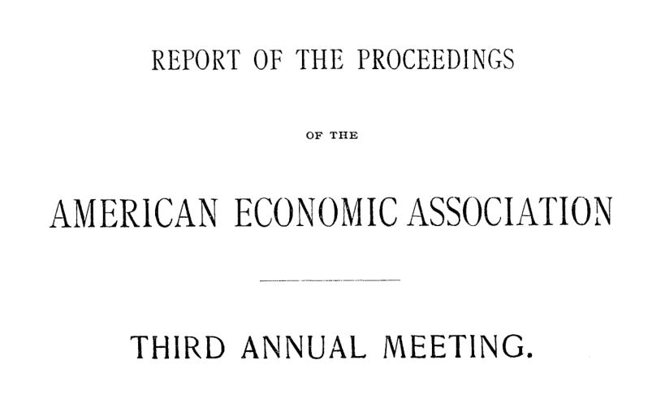

Filadélfia, 1888: a noite em que a economia deixou de ser seita
Leitura: 8 min
Na terceira reunião anual, Francis A. Walker anunciou o fim da economia de facções: o laissez-faire deixava de ser dogma e virava regra com ônus da prova. O relatório do secretário mostra a casa crescendo.


Na noite de quinta-feira, 27 de dezembro de 1888, o salão da Universidade da Pensilvânia, na Filadélfia, recebeu a sessão solene da terceira reunião anual da American Economic Association. Falaram o reitor da universidade, William Pepper; Robert Adams Jr., em nome dos cidadãos da cidade; e o presidente da associação, o general Francis A. Walker, presidente do Massachusetts Institute of Technology. Depois, um lanche nas salas ao lado. Por dificuldade de agenda, a sessão não pôde abrir o encontro; os discursos só ganharam o primeiro lugar no papel.
O volume que registra a reunião saiu em julho de 1889. Reúne a saudação de Pepper, o discurso de Walker, Progresso recente da economia política nos Estados Unidos, e o longo relatório do secretário, Richard T. Ely, sobre os quatro dias de trabalhos, de 26 a 29 de dezembro.
O fio comum é uma tese de Walker. A associação, vista como uma seita econômica em sua fundação, em Saratoga, em 1885, já abrangia, segundo ele, todos os economistas ativos do país. O relatório de Ely confirma o diagnóstico com números e com uma decisão: a assembleia aprovou emenda segundo a qual a associação não tomaria atitude partidária nem comprometeria seus membros com posições sobre questões práticas. É o registro de uma profissão aprendendo a discordar sem excomungar.
Por que Walker chamou a disputa tarifária de falsa questão?
Walker começa pelo passado. Num país novo, de terra abundante e pouca tradição, os economistas americanos teriam tido uma oportunidade rara de estudar as forças industriais em estado puro. Desperdiçaram-na ao se dividir cedo entre protecionismo e livre-comércio, que ele chama de questão em grande parte falsa. Exigir que um economista se declarasse primeiro de um lado era, compara, como exigir que um cidadão fosse pacifista absoluto ou belicista absoluto.
A divisão produziu leituras seletivas da Europa. Os protecionistas buscavam os mestres alemães sem entender seu método histórico e estatístico. Os livre-cambistas importavam os ingleses em sua forma mais crua, ignorando as ressalvas dos próprios autores. O exemplo de Walker é a doutrina do fundo de salários, fruto, diz ele, de condições peculiares e insulares da Inglaterra e desmentida pela experiência americana mais corriqueira.
Como o laissez-faire virou teste de pertencimento?
O primeiro passo do movimento, diz Walker, foi emancipar a economia da teologia natural. Durante décadas, provar que um arranjo era natural bastava para prová-lo conveniente. Ele não briga com a teologia; exige apenas que toda instituição apresentada como benéfica seja demonstrada pelos fatos observados.
Com o laissez-faire ocorreu algo semelhante. Na Inglaterra, a doutrina era qualificada por vários economistas. Nos Estados Unidos, ganhou rigidez maior que em qualquer outro lugar, e não servia apenas para separar ortodoxos de heterodoxos.
“Era usada para decidir se um homem era economista, afinal.” (It was used to decide whether a man were an economist at all.)
A intolerância, argumenta, decorria da própria doutrina: se ela fosse universalmente verdadeira, não haveria razão para conversar com quem pensasse diferente. Admitidas exceções, toda classe, comunidade e instituição passa a ser evidência. A economia deixa de ser obra acabada, que um único raciocinador poderia ter feito numa ilha de mil habitantes, e vira trabalho coletivo, sempre por fazer.
Walker, porém, faz uma ressalva que sustenta o discurso inteiro. Declara-se crente na liberdade e no esforço individual e aceita o laissez-faire como regra prática de grande alcance, à qual só se abre exceção por motivo claro de interesse público urgente.
“Um pesado ônus da prova recai sobre toda proposta de limitar” (a heavy burden of proof rests upon every proposal to limit)
O que mudou na figura do trabalhador?
Para Ricardo e os Mill, bastava um homem econômico abstrato, que Walker descreve como marionete: útil para as leis da produção e da troca, inútil para tratar da distribuição. As demandas de trabalhadores e reformadores obrigaram a economia a estudar pessoas reais. Walker credita à lei da seleção natural, anunciada cerca de vinte anos antes, um impulso decisivo, e Pepper também invocou Darwin e Spencer. É um vocabulário de época, que transpunha a biologia para a sociedade com uma confiança que hoje pede cautela.
O alvo central é o que ele chama de tutela do capital: a ideia de que os empregadores eram os curadores naturais dos salários. Cairnes ainda a reafirmava quinze anos antes. Sua queda, sustenta Walker, não veio de melhor raciocínio profissional, mas de trabalhadores que atingiram a maioridade, ajudados, na Inglaterra, pelo fim do imposto sobre jornais, pela revogação das leis contra associações operárias, pelos sindicatos e pela educação pública gratuita.
Para onde vai o imposto?
O exemplo mais afiado é tributário. Em 1872, David A. Wells, presidente da comissão de impostos do Estado de Nova York, escreveu que todos os impostos se igualam e se difundem. Em 1874, acrescentou que um tributo lançado sobre Astor iria para os aluguéis e, sobre Stewart, para as mercadorias. Walker comenta com ironia seca: como seria simples, assim, o trabalho do legislador.
“ao longo das linhas de menor resistência” (along the lines of least resistance)
A expressão, que Walker atribui ao mais capaz representante americano da escola inglesa, sem nomeá-lo, muda tudo. Os impostos se difundem, mas param em quem não consegue repassá-los: os pobres, os endividados, os que dependem de intermediários. A incidência deixa de ser detalhe e vira responsabilidade do legislador. Walker fecha com a imagem de uma baía seca invadida pelo mar, para dizer quanto o mundo econômico mudara.
O que disse o anfitrião?
Pepper chamou a reunião de a mais importante entre as recebidas pela universidade e rebateu o que descreveu como impressão errônea sobre o ensino de economia ali. Ridicularizou os velhos economistas com o doutor Sangrado, do romance Gil Blas, que curava tudo com sangria e água morna, crítica que estendia aos entusiastas da livre concorrência absoluta e aos da intervenção extrema. Defendeu um método histórico, comparativo e estatístico.
O que o relatório do secretário mostra sobre a associação?
Ely registra uma casa em expansão. A associação somava 500 membros em dezembro de 1888, e o secretário via possibilidade de chegar a 10 mil. Havia seis filiais locais, de Springfield a Canton, no Ohio, e notícias de associações inspiradas na americana em Oxford e em Sydney.
A pauta mostra a amplitude da época: salários, com J. B. Clark; ensino manual, estradas, estatísticas ferroviárias, o dólar honesto, as leis agrárias irlandesas e decisões judiciais sobre conspiração e boicote. Nos debates, Lester F. Ward relatou que, em 1874-79, as tarifas de carga nas ferrovias estatais prussianas foram 15% menores que nas privadas.
A decisão mais duradoura foi institucional. A assembleia reescreveu o artigo II do estatuto: pesquisa histórica e estatística, monografias, perfeita liberdade de discussão sem atitude partidária e um bureau de informação. O artigo III foi simplesmente omitido. Ely pediu ainda a incorporação da associação, para receber doações, uma sede em Washington ou Nova York e um gerente remunerado.
Na minha leitura
Na minha leitura, o discurso de Walker vale menos pelo diagnóstico histórico e mais pela posição de duas mãos. Ele desmonta o laissez-faire como dogma, mas o preserva como regra, com o ônus da prova sobre quem quer intervir. Esse é o dilema permanente da política econômica: não mercado contra Estado, mas quem precisa demonstrar o quê, e com que evidência. A passagem sobre impostos é a mais moderna do texto. Perguntar onde estão as linhas de menor resistência é perguntar quem não consegue escapar de um tributo, e nenhuma reforma séria pode dispensar essa pergunta.
A outra lição é institucional. A associação cresceu quando trocou declarações de princípio por um compromisso com pesquisa e discussão livre. A credibilidade de uma profissão depende de pluralismo disciplinado por dados. O entusiasmo de 1888 com metáforas biológicas envelheceu mal; o método que Walker e Pepper defendiam, observar antes de concluir, não.
Glossário
- Laissez-faire
- Doutrina de que o Estado deve interferir o mínimo possível na atividade econômica.
- Fundo de salários
- Tese clássica de que os salários dependem de um estoque fixo de capital destinado a pagá-los, dividido pelo número de trabalhadores.
- Incidência tributária
- Quem efetivamente suporta o custo de um imposto, que pode ser diferente de quem o recolhe.
- Tutela do capital
- Expressão de Walker para a ideia de que os empregadores eram os guardiões naturais dos interesses dos assalariados.
- Homem econômico
- Agente abstrato dos economistas clássicos, movido apenas pelo interesse em produzir e trocar.
Artigos desta edição
- Address of Welcome — Dr. William Pepper, Provost of the University of Pennsylvania (pp. 9–13). Saudação do reitor da Universidade da Pensilvânia na sessão solene de 27 de dezembro de 1888. Pepper apresenta a fundação da associação como marco na história da ciência econômica no país e rebate críticas ao ensino de economia na universidade. Satiriza o dogmatismo dos velhos economistas com o doutor Sangrado, de Gil Blas, aplicando a crítica tanto aos defensores da livre concorrência absoluta quanto aos da intervenção extrema. Defende um método histórico, comparativo e estatístico, invoca Darwin e Spencer e lamenta a ausência do professor E. J. James, afastado por doença. JSTOR
- Recent Progress of Political Economy in the United States — General Francis A. Walker, LL.D., President of Massachusetts Institute of Technology (pp. 17–40). Discurso anual do presidente da associação. Walker explica por que a entidade, vista como seita em 1885, passou a reunir todos os economistas ativos do país. Critica a divisão entre protecionistas e livre-cambistas, a dependência da teologia natural e o uso do laissez-faire como teste de pertencimento, embora o preserve como regra com ônus da prova sobre a intervenção. Rejeita o homem econômico de Ricardo e a tutela do capital, atribuindo a mudança à ascensão dos trabalhadores. Fecha contrastando a visão de David A. Wells sobre a difusão dos impostos com a tese das linhas de menor resistência. JSTOR
- Secretary's Report — Richard T. Ely, Secretary (pp. 43–95). Relatório dos trabalhos de 26 a 29 de dezembro de 1888, na Filadélfia. Traz resumos de trabalhos sobre salários, ensino manual, estradas, estatísticas ferroviárias, moeda, caridade, leis agrárias irlandesas, desemprego involuntário e decisões judiciais sobre conspiração e boicote, com os debates que se seguiram. Registra a reforma do estatuto, que fixou a liberdade de discussão e a recusa de atitude partidária, o relatório de E. W. Bemis sobre as seis filiais e o balanço de Ely: 500 membros, presença no exterior, doações e o pedido de incorporação, sede e gerente remunerado. JSTOR
Fontes
- Address of Welcome (pp. 9–13). JSTOR · Internet Archive (PDF)
- Recent Progress of Political Economy in the United States (pp. 17–40). JSTOR · Internet Archive (PDF)
- Secretary's Report (pp. 43–95). JSTOR · Internet Archive (PDF)
- Sumário da edição no JSTOR: Publications of the American Economic Association, vol. 4, nº 4.
Documento em domínio público (EUA, publicado antes de 1931), via JSTOR Early Journal Content e Internet Archive. Resumo e comentário do autor deste site, sem afiliação com a American Economic Association. Encontrou um erro? Escreva: a correção é publicada no próprio texto, com data.
← Nº 19 · Lama, enxada e pedágio: o custo da estrada ruim nos EUA de 1889 Nº 21 · Malthus, Ricardo e os números: três lições de método →